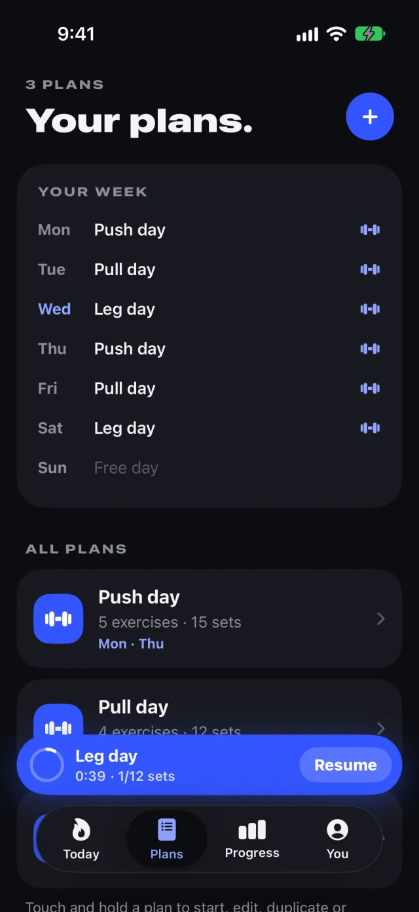

Today
The week at the top, with planned and trained days marked. Today's plan is one big card with a single Start button.
A workout tracker for iPhone. Plan your week, log each set in a tap, rest between them and see your progress. I designed it and rebuilt it natively in SwiftUI.



Everything is designed to be used between sets, with one hand and a raised heart rate.
The week at the top, with planned and trained days marked. Today's plan is one big card with a single Start button.
One row per set showing last time, weight and reps. Tap last time to copy it in. Ticking a set starts the rest timer.
Add or take off 15 seconds, or skip. If the phone is locked, a notification says when rest is up.
See the week at a glance, then edit days, exercises, sets, rep ranges and rest. Touch and hold a plan to start, duplicate or delete it.
The heaviest set for each exercise over time, workouts per week for eight weeks, and full history.
Changes back up automatically and merge if two phones were used. Finished workouts can be saved to Apple Health.
Built for one hand, between sets. Try the same interactions and values from the app.
Tap a number to see what each part solves.
Tap “60 × 8” to copy last time, then tick the set.
Try the first set.
Compare the old feature list with what stayed.
Wide words motivate. Even digits stay easy to compare.
Every app gets its own accent, so none borrows another's identity.
#0C0D11#ECEDF1#18191F#FAFAFC#3355FF#3355FF#8FA3FF#2440E0#F6C453#A86B00#FF9F43#C2410CemeraldcobaltredControls are drawn to scale in points.
Tap each spring. Reduce Motion is respected.
Repway has no sound effects. Rest ending is three firm taps, so you can feel it. iPhone haptics are drawn here; supported Android phones vibrate.
Swift · SwiftUI · HealthKit · Supabase. Version 2.0 is in TestFlight; the Android version still uses the earlier React and Capacitor build.